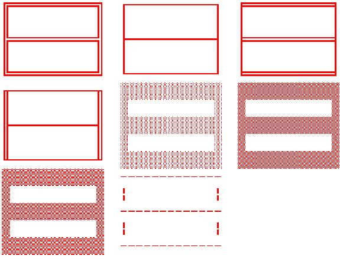

Seleciona o tipo de moldura que o gerenciador deve apresentar. Caso o usuário corrente tenha privilégio de super usuário será permitido alterar a moldura da tela de logon (tela de abertura - neste momento, o usuário ainda não foi identificado). Outros privilégios só permitem alterar a preferência pessoal.
